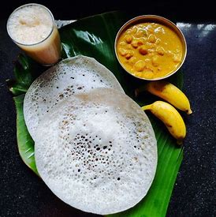
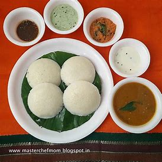
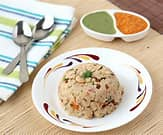
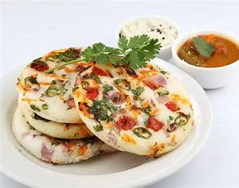

Appam
Ingredients: Rice, Coconut Milk, Yeast, Salt
Preparation Steps:
- Soak rice, grind with coconut, add yeast, and ferment for 8 hours.
- Heat an appam pan, pour batter, and cook until edges are crispy.
- Flip and cook briefly, then remove.
- Serve with vegetable stew or curry.

Fish Curry
Ingredients: Fish, Coconut Milk, Tamarind, Spices
Preparation Steps:
- Marinate fish with turmeric and salt for 15 minutes.
- Sauté spices, add coconut milk and tamarind paste in a pan.
- Add fish, simmer for 15 minutes until cooked.
- Serve hot with steamed rice.

Idli
Ingredients: Rice, Urad Dal, Salt, Water
Preparation Steps:
- Soak rice and urad dal separately for 6 hours.
- Grind into a smooth batter and mix with salt.
- Ferment the batter for 8 hours in a warm place.
- Pour the batter into idli molds and steam for 10-12 minutes.
- Serve hot with coconut chutney and sambar.

Kerala Parotta
Ingredients: All-Purpose Flour, Oil, Salt, Water
Preparation Steps:
- Knead flour with oil, salt, and water; rest the dough for 2 hours.
- Roll into thin layers, coil, and flatten into discs.
- Cook on a griddle with oil until golden and flaky.
- Serve with a spicy curry.

Upma
Ingredients: Semolina, Mustard Seeds, Curry Leaves, Vegetables
Preparation Steps:
- Roast semolina in a pan until aromatic, then set aside.
- Heat oil, add mustard seeds and curry leaves, then sauté vegetables.
- Add water and semolina, stirring until fluffy and cooked.
- Serve hot with a side of chutney.

Uttapam
Ingredients: Rice, Urad Dal, Onion, Tomato, Green Chili
Preparation Steps:
- Soak rice and urad dal, grind into a batter, and ferment overnight.
- Heat a pan, pour thick batter, and sprinkle chopped onion, tomato, and green chili.
- Cook until golden brown on both sides.
- Serve hot with coconut chutney or sambar.